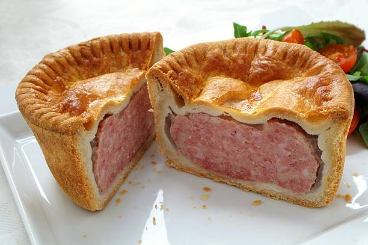

Spam Wellington
Enjoy your Spam Wellington with your favorite sides, such as roasted vegetables or a green salad.
Ingredients:
- 1 can (12 oz) of Spam
- 1 sheet of puff pastry, thawed
- 8 oz of cremini or button mushrooms, finely chopped
- 1 small onion, finely chopped
- 2 cloves of garlic, minced
- 2 tablespoons of unsalted butter
- 1 tablespoon of vegetable oil
- 1 tablespoon of fresh thyme leaves, chopped (or 1 teaspoon of dried thyme)
- Salt and pepper, to taste
- 1 large egg, beaten
- 2 tablespoons of Dijon mustard (optional)
Instructions:
- Preheat your oven to 400°F (200°C).
- In a large skillet, melt the butter and add the vegetable oil over medium heat. Add the onions and garlic, and cook until softened, about 3-4 minutes.
- Add the chopped mushrooms and thyme to the skillet. Cook, stirring occasionally, until the mushrooms release their moisture and the mixture is relatively dry, about 10-12 minutes. Season with salt and pepper, to taste. Remove the skillet from the heat and let the mushroom mixture cool.
- While the mushroom mixture cools, remove the Spam from the can and pat dry with a paper towel. If desired, spread a thin layer of Dijon mustard over the Spam.
- On a lightly floured surface, roll out the puff pastry into a rectangle large enough to enclose the Spam. Trim any excess pastry.
- Spread the cooled mushroom mixture evenly on the puff pastry, leaving a small border around the edges.
- Place the Spam in the center of the mushroom-covered pastry. Brush the edges of the pastry with the beaten egg.
- Carefully fold the pastry around the Spam, pressing the edges to seal. You may need to trim any excess pastry to ensure a good seal.
- Transfer the wrapped Spam, seam-side down, to a parchment-lined baking sheet. Brush the top and sides of the pastry with the remaining beaten egg.
- Bake in the preheated oven for 25-30 minutes, or until the pastry is golden brown and crisp.
- Remove the Spam Wellington from the oven and let it rest for 5 minutes before slicing and serving.